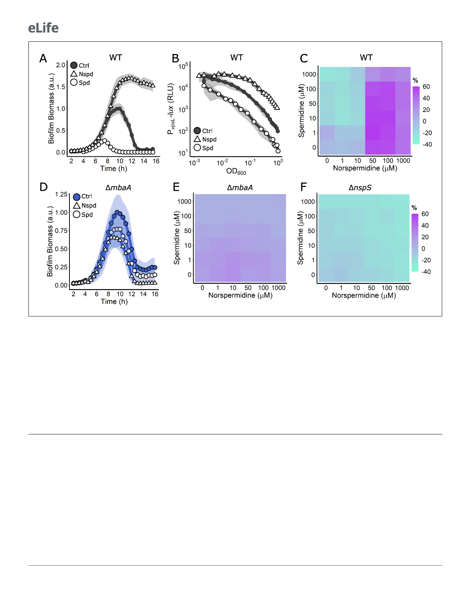

Research article
Microbiology and Infectious Disease
Figure 3. Periplasmic detection of polyamines controls V. cholerae biofilm dispersal. (A) Quantitation of biofilm biomass over time measured by time-
lapse microscopy following addition of water (Ctrl), 100 mM norspermidine, or 100 mM spermidine to WT V. cholerae. (B) Light output from the PvpsL-
lux reporter for the treatments in (A) over the growth curve. (C) c-di-GMP reporter output at the indicated polyamine concentrations for WT V. cholerae.
Relative reporter signal (% difference) is displayed as a heatmap (teal and purple represent the lowest and highest reporter output, respectively). (D) As
in (A) for the DmbaA mutant. (E) As in (C) for the DmbaA mutant. (F) As in (C) for the DnspS mutant. Biofilm biomass data are represented as means
normalized to the peak biofilm biomass of the Ctrl condition. In all biofilm biomass measurements, N = 3 biological and N = 3 technical replicates, ±
SD (shaded). a.u.: arbitrary unit. In vpsL-lux measurements, N = 3 biological replicates, ± SD (shaded). RLU: relative light units. For the c-di-GMP
reporter assays, values are expressed as the percentage difference relative to the untreated WT strain, allowing comparisons to be made across all
heatmaps in all figures in this article. The same color bar applies to all heatmaps in this article. For each condition, N = 3 biological replicates.
Numerical values and associated SDs are available in Supplementary file 1.
The online version of this article includes the following figure supplement(s) for figure 3:
Figure supplement 1. NspS is required for V. cholerae biofilm formation.
MbaA transduces external polyamine information internally to control
biofilm dispersal
Our data show that both the MbaA periplasmic polyamine sensor and the PotD1 polyamine importer
are required for biofilm dispersal. Our next goal was to distinguish the contribution of periplasmic
detection from cytoplasmic import of polyamines to the biofilm lifecycle. We began with periplasmic
polyamine detection, mediated by NspS together with MbaA. We supplied norspermidine or sper-
midine to the DmbaA mutant and monitored biofilm biomass over time. To our surprise, the DmbaA
mutant was impervious to the addition of either polyamine as both polyamines caused only a very
modest reduction in overall biofilm biomass, and dispersal timing resembled the untreated DmbaA
control (Figure 3D, Video 1). Consistent with this result, titration of the polyamines alone and in
combination onto the DmbaA strain carrying the c-di-GMP reporter did not substantially alter
7 of 20